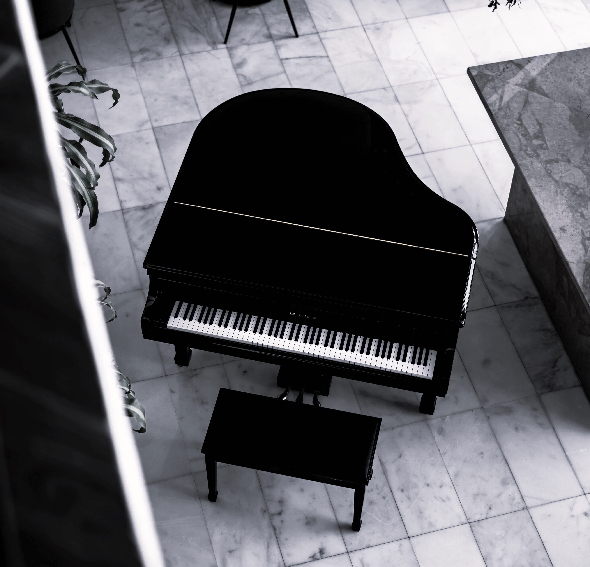
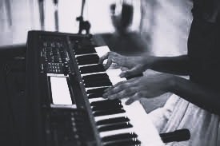

Pianoforte a coda
Il più grande e affascinante dei pianoforti e quello con le sonorità più ricche. Il meccanismo è orizzontale, quindi se il coperchio è aperto il suono viene trasmesso senza ostacoli in tutta la sua intensità. I più grandi raggiungono i due metri e mezzo di lunghezza.
Prezzo: 50 000 euro
Pianoforte verticale
Scelto maggiormente da chi suona in casa, l'altezza non supera il metro e mezzo. Può avere tre meccanismi diversi: sotto la tastiera (spinetta), con meccanismo diretto (alla stessa altezza della tastiera) oppure un sistema meccanico (sopra la tastiera) tipico dei vecchi pianoforti.
Prezzo: 3000 euro


Pianoforte digitale
Tastiera con almeno 88 tasti che imita il tocco di un vero pianoforte. In generale, possiamo dire che la qualità del suono e la sensazione al tocco può avvicinarsi molto a quella del pianoforte verticale. Il pianoforte digitale consente anche di produrre musica elettronica.
Prezzo: 300 euro
Attenzione!
Il pianoforte a coda e il pianoforte verticale hanno bisogno di manutenzione costante. Il pianoforte digitale invece non necessita di manutenzione convenzionale. Inoltre, è necessario mantenere lo strumento sempre pulito e a temperature stabili. Quando si tratta di accordatura e trasporto, è consigliabile scegliere dei professionisti e stipulare un’assicurazione.